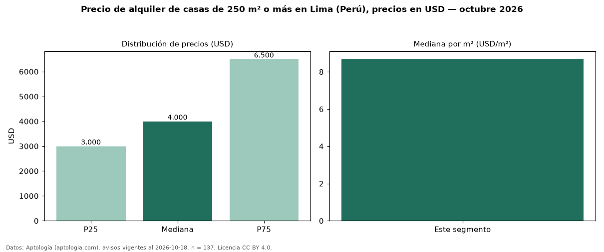

Precio de alquiler de casas de 250 m² o más en Lima (Perú), precios en USD — octubre 2026
Con 137 avisos vigentes, el canon mediano de casas de 250 m² o más en alquiler en Lima (Perú) es USD 4.000 al mes. Frente a la mediana de todas las casas en alquiler de Lima (USD 3.800, n = 177), queda 5 % por encima; este segmento reúne el 77 % de esos avisos. Por metro cuadrado, la mediana es USD 8,68/m² al mes (n = 135), 12 % por debajo del conjunto de referencia (USD 9,85/m²). El área mediana anunciada es 500 m². El segmento con más oferta es el de 3 o más habitaciones (135 avisos, mediana USD 4.000). La mitad central de los avisos va de USD 3.000 a USD 6.500 (razón 2,2), una dispersión alta. Datos: Aptología (aptologia.com), CC BY 4.0 — https://www.aptologia.com/pe/alquiler/lima. Archivos: PDF, CSV con las cifras y gráfica PNG.

| Avisos únicos | 137 |
|---|---|
| Percentil 25 | COP 3.000 |
| Mediana | COP 4.000 |
| Percentil 75 | COP 6.500 |
| Mediana por m² | COP 8 |
Fuente: avisos vigentes de portales inmobiliarios recopilados por Aptología, deduplicados (mínimo 30 avisos únicos por celda). Precios pedidos, no cerrados. Fecha: 2026-10-18.